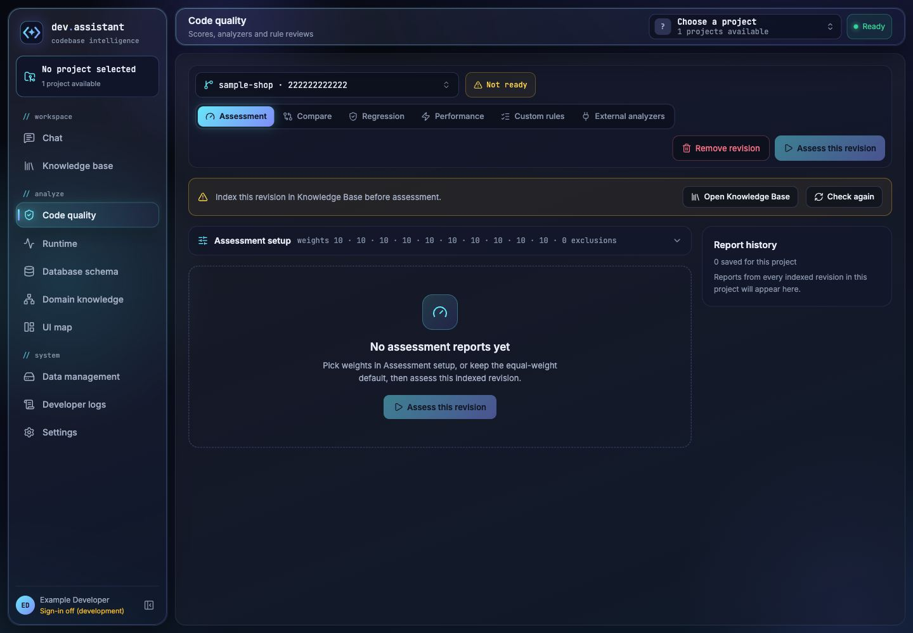
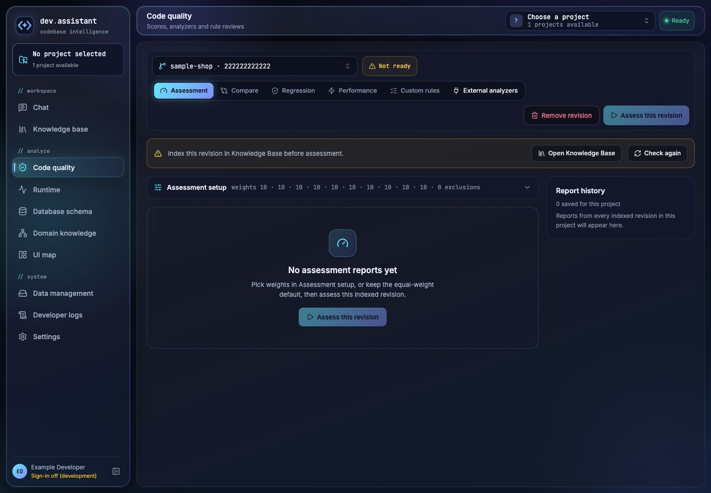
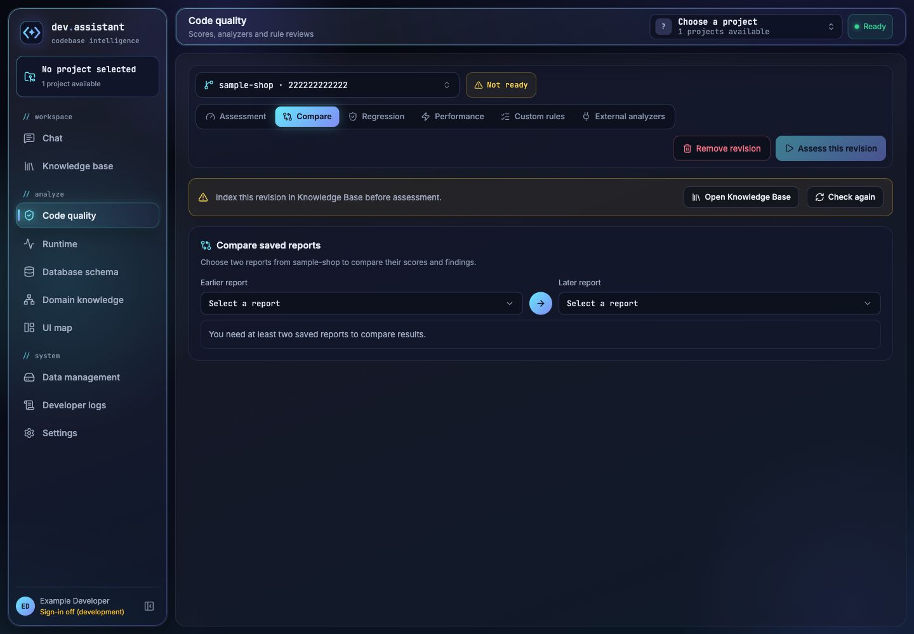
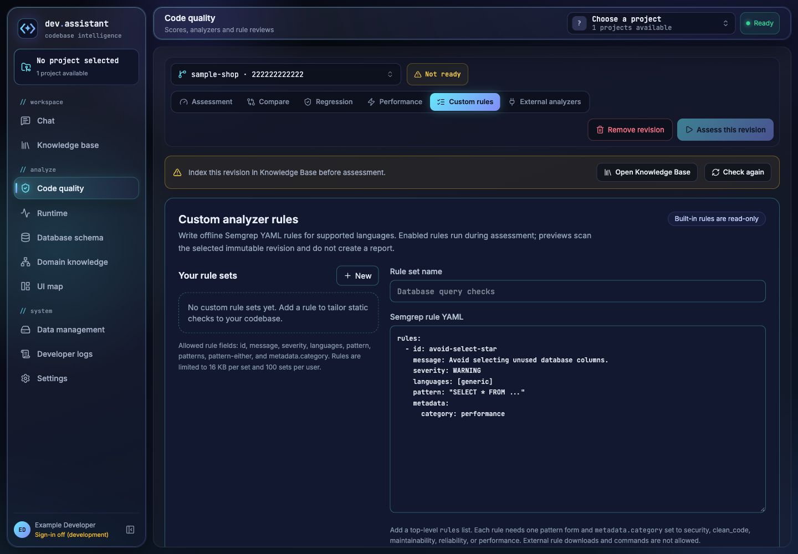
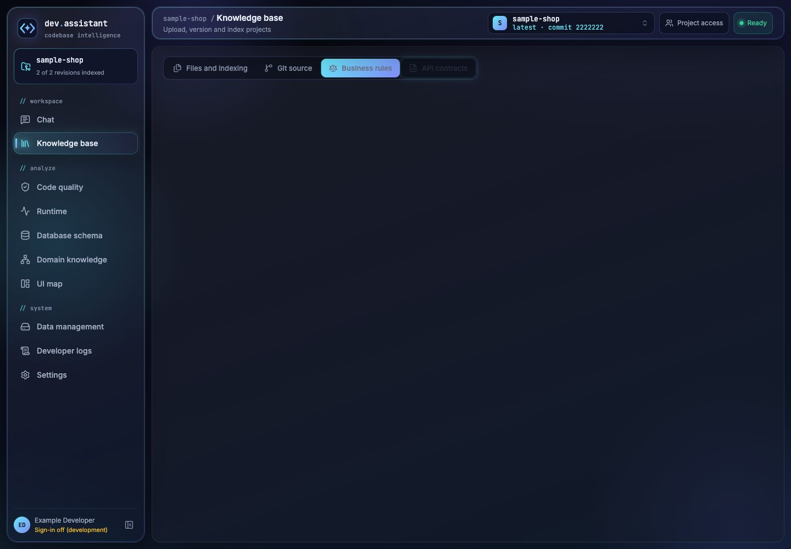
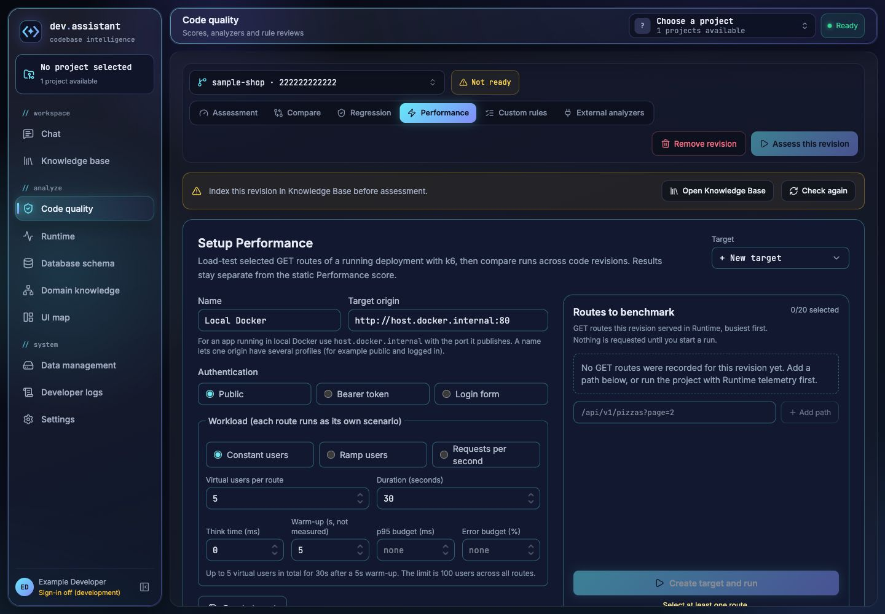

Run a static assessment
- Open Code Quality → Assessment.

Code Quality and the project revision selector. - Select the project and indexed revision.
View screenshot
Code Quality and the project revision selector. - Review exclusions and category weights. Save changes only when they reflect how you want this assessment scored.

Assessment setup and report history. - Start the assessment and wait for its progress to complete.
View screenshot
Assessment setup and report history. - Open findings by category. Check the code excerpt and evidence before changing the source.
- Keep the report as a historical snapshot; later source or business-rule changes do not rewrite it.

Comparing two saved assessment reports.

Use custom rules
- Open Custom rules and create a Semgrep YAML rule set.

Custom rules including the rule-set list and editor. - Keep the rule within the supported languages and Code Quality categories.
View screenshot
Custom rules including the rule-set list and editor. - Preview it against the selected immutable revision.
View screenshot
Custom rules including the rule-set list and editor. - Enable it only after the preview is valid. A report stores the exact rule text and content hash used.
View screenshot
Custom rules including the rule-set list and editor.
Custom rules run offline against inventoried business source files. They cannot download rule packs or run project commands.
Review business rules
- Connect one project to its dedicated Outline collection under Business rules.

Business rules: configure the Outline connection. - Save the read-only Outline token in the host credential store.
View screenshot
Business rules: configure the Outline connection. - Sync the collection, then link rules to methods, routes, or tables.
View screenshot
Business rules: configure the Outline connection. - Run the assessment and read each result as supported, concern, or unknown with its evidence.
- Use Check against business rules for a diff when you need to review a proposed change.

Run a performance check
- Open Performance and create a target profile.

Performance target setup and workload controls. - Choose routes from Runtime traffic or add GET paths.
View screenshot
Performance target setup and workload controls. - Choose public, bearer-token, or one-run login authentication.
View screenshot
Performance target setup and workload controls. - Set constant users, stages, or request rate, plus optional think time and p95/error budgets.
View screenshot
Performance target setup and workload controls. - Start the run. Open the result for p50–p99, throughput, status counts, budgets, and slow Runtime-traced requests.
- Compare a baseline run with a candidate revision when the inputs are equivalent.

Interpretation. A partial analyzer, unavailable coverage, or zero findings is not proof that the code has no defects.